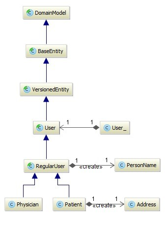

In traditional Java EE, entity beans are thin objects and responsible only for encapsulating business data; the actual business logic is left to session beans. In this approach, state and behavior are isolated, which means that the design is not truly object-oriented and applications that use this design cannot handle complex business logic very well.
In MedRec, entities and value objects are both fine-grained rich objects that contain the
business data as well as the business logic associated with the instances. They do not contain, however, the
class-level business logic or logic that depends on gateways, repositories, and so on; rather, such logic is
contained in the SLSB services. The main difference between entity and value
object is that the former has a distinct identity while the latter does not.
Nearly all the entities and value objects in MedRec are JPA mapped objects. In general, the
entities are annotated with @Entity and the value objects are
annotated with @Embeddable, which means that both of them will be persisted to a
database. The inheritance feature of object-oriented programming is used heavily in these objects, so that we can
define the common properties and operations (or just marker interfaces) in the abstract base classes, and then reuse
them in the concrete classes, significantly simplifying the overall implementations.The base entities
are annotated with @MappedSuperclass; they do not make use of the inheritance mapping
strategies of JPA, because MedRec does not require the polymorphism of entities, and through the
inheritance we do nothing other than reuse class definitions.
The following diagram illustrates a typical inheritance hierarchy in MedRec:

The following JPA best practices are adopted in the entities and value objects:
entities and value objects include
these two methods because it is considered a best practice and is necessary for the detached
entities that can be put into collections. MedRec does not use the primary keys generated by the
database to test the equality and calculate the hash code, but instead uses the business keys. This is because
the primary keys are not available for transient entities.
entities and value objects include
annotations of JavaBean Validation. In Java EE environments, Bean Validation integrates with Java EE containers
and services to allow developers to easily define and enforce validation constraints.
Copyright © 1996, 2019, Oracle and/or its affiliates. All rights reserved.